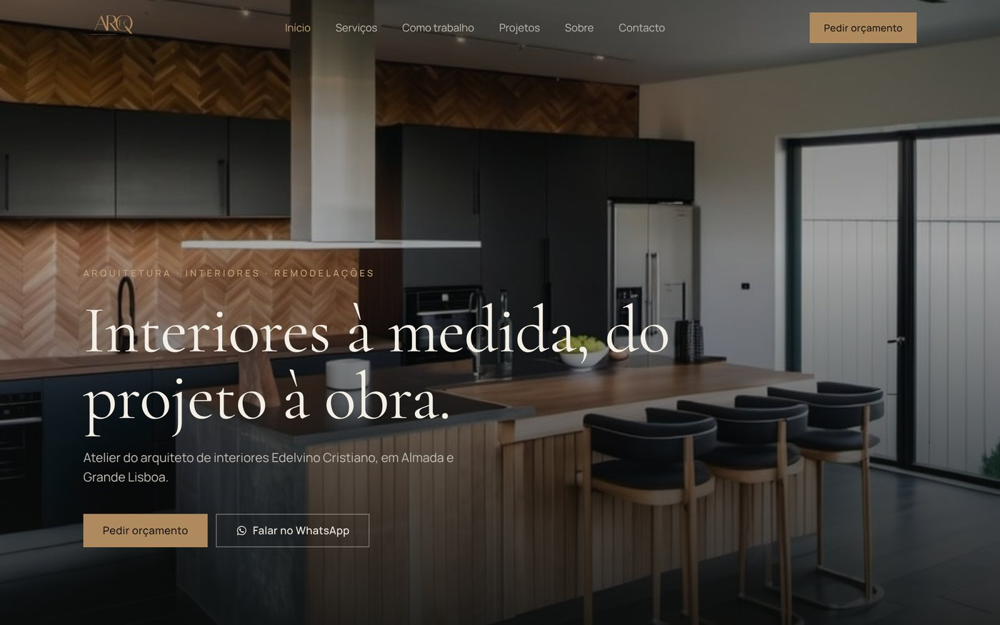
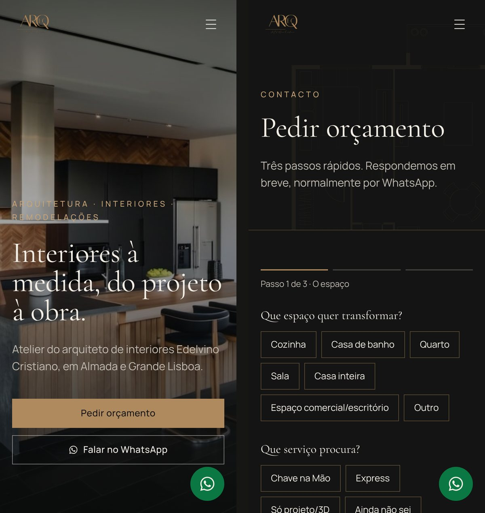
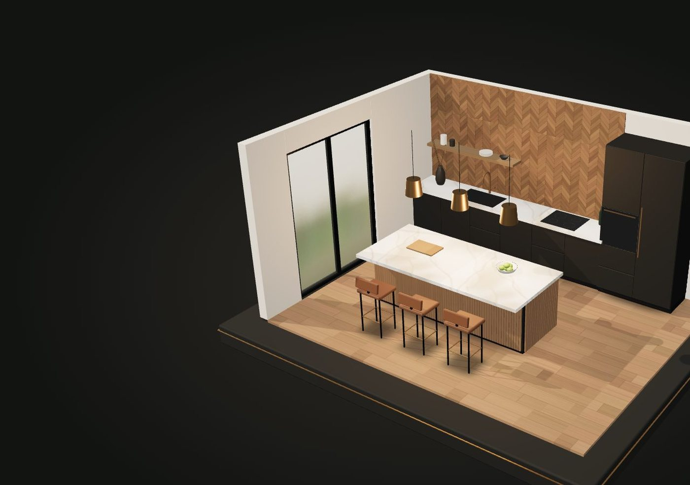
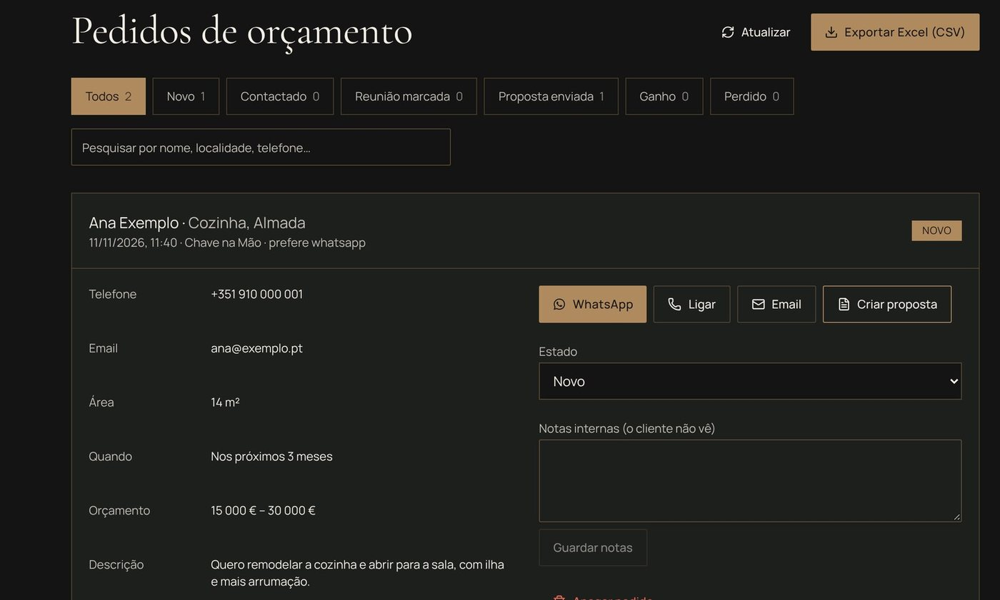
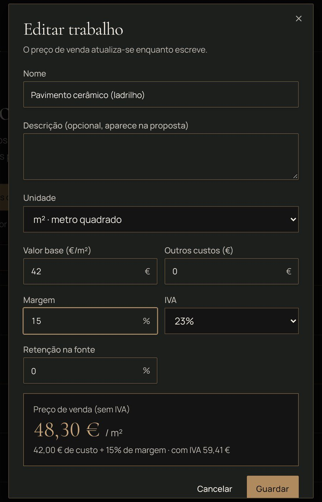
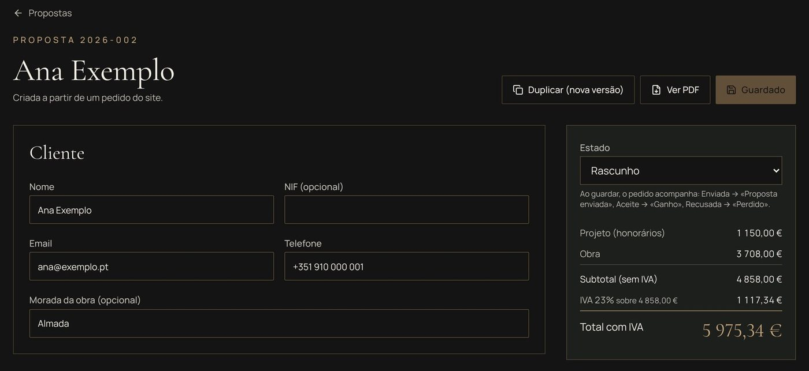
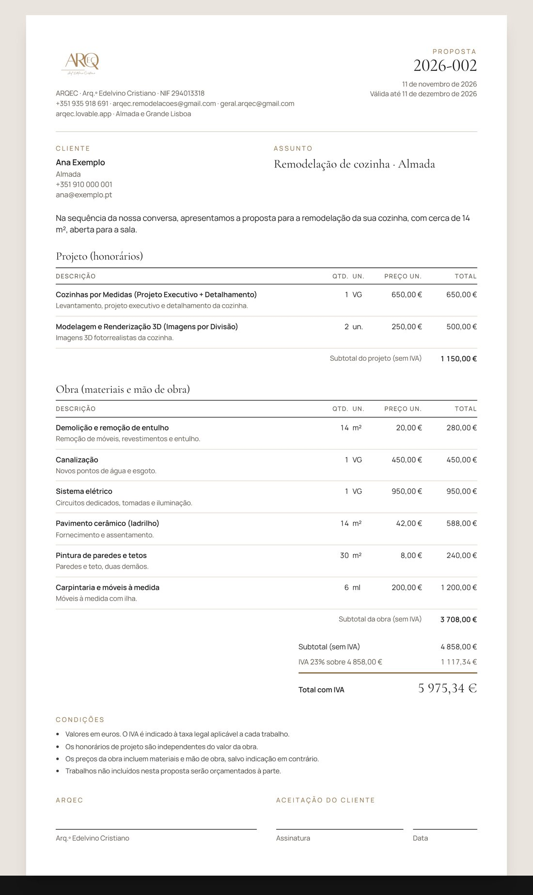

Porque nasceu
Um bom trabalho precisa de ser encontrado e de responder depressa
O Edelvino faz projetos de interiores, modelação 3D e acompanhamento de obra. Precisava de um site à altura desse trabalho e de uma forma simples de receber pedidos e responder com um orçamento claro.
Numa conversa gravada, explicou-me como calcula um orçamento: preço por m², metro linear, unidade ou valor global, com materiais e mão de obra, uma margem, os honorários de projeto à parte e o IVA. A partir daí, o site ganhou um CRM: um painel onde cada pedido pode virar uma proposta pronta a enviar.
Do formulário do site ao PDF que o cliente assina, tudo no mesmo sítio.
O que entreguei
Tudo o que foi feito, discriminado
O site, para os clientes
Sete páginas à medida
Início, Serviços, Como trabalho, Projetos, Sobre, Contacto e Privacidade, nas cores e letras da marca, pensadas primeiro para o telemóvel.
Pedido de orçamento em 3 passos
O espaço, o serviço, a área, o prazo e o orçamento previsto, com consentimento e política de privacidade.
WhatsApp com mensagem escrita
O botão muda a mensagem conforme a página: quem vê a cozinha em 3D fala do 3D, quem está num projeto refere esse projeto.
«Olá Edelvino! Vim pelo site da ARQEC. Vi a cozinha em 3D e gostava de ver o meu espaço em 3D antes da obra.»
Maqueta 3D da cozinha
Na página Como trabalho, uma cozinha monta-se em 3D ao descer: planta, volumes e materiais. Em telemóveis mais fracos, mostra uma imagem.
Portefólio honesto
A página Projetos está pronta para obras reais, mas só mostra fotografias com autorização dos clientes. Até lá, mostra imagens de inspiração identificadas.
Partilha e pesquisa
Ícone, imagem de partilha para WhatsApp e redes, título e descrição para o Google e mapa do site.
O painel e o CRM, para o atelier
Pedidos organizados
Cada pedido do site com estado (Novo → Contactado → Reunião → Proposta enviada → Ganho ou Perdido), notas internas e exportação para Excel.
Tabela de preços com margem
17 serviços da lista de faturação do atelier e 11 trabalhos de obra. O preço de venda calcula-se sozinho: (valor base + outros custos) × (1 + margem).
Propostas num minuto
Criar a partir de um pedido copia os dados do cliente. Escolhe-se da tabela, põem-se as quantidades e o total aparece. Projeto e obra ficam separados.
Honorários, IVA e retenção
Calculadora de honorários por hora, IVA por taxa (23 %, 13 %, 6 % ou 0 %) e retenção na fonte quando se aplica.
PDF com a marca do atelier
Logótipo, NIF, contactos, tabelas, totais, condições e espaço para assinatura. O IVA aparece só no fim, como o atelier pediu.
Entrada segura
Só a conta do atelier vê pedidos, preços e propostas. Entrada com Google ou palavra-passe forte, com recuperação por email.
Conteúdos e apoio
Publicações para as redes
6 publicações com as imagens e as legendas, na identidade da ARQEC, e um plano de publicação.
Guias de uso
Um guia do painel de pedidos e um guia do CRM em PDF, com capturas e perguntas frequentes.
Preços de obra de partida
Os 11 trabalhos de obra começam com médias do mercado português, identificadas para o atelier rever e pôr a sua margem.
Ecrãs
Como se vê
As capturas do painel usam clientes de exemplo. Nenhum dado real aparece aqui.







Por dentro
De um pedido a uma proposta aceite
- Cliente
Pede um orçamento
Preenche os 3 passos no site. O pedido fica guardado e aparece no painel como «Novo».
- Atelier
Responde
Abre o pedido e fala com o cliente por WhatsApp, telefone ou email, com um toque.
- Atelier
Cria a proposta
«Criar proposta» copia o nome, os contactos, a localidade e a área. Escolhe os serviços e os trabalhos da tabela e escreve as quantidades.
- Atelier
Envia o PDF
Descarrega o PDF com a marca da ARQEC e envia-o. Ao marcar como enviada, o pedido passa sozinho a «Proposta enviada».
- Os dois
Fecham
Proposta aceite, o pedido passa a «Ganho». Recusada, passa a «Perdido». Para uma alteração, duplica-se uma nova versão.
Como foi feito
Tecnologias
React, TanStack Start e Tailwind · Supabase · Three.js para a maqueta 3D · testes automáticos com Vitest.
Decisões
O que decidi e porquê
Somar euros com casas decimais dá erros de arredondamento.
Todas as contas são feitas em cêntimos inteiros e testadas: preço unitário, linhas, IVA por taxa e retenção.
Mudar um preço na tabela podia alterar propostas já enviadas.
Cada proposta guarda os preços do dia em que foi feita. A tabela só afeta as propostas seguintes.
O cliente não queria a coluna do IVA em cada linha do PDF.
O PDF mostra o IVA só no fim. No painel, o atelier continua a ver e a escolher a taxa de cada linha, porque há serviços a 0 %.
A maqueta 3D ficava em branco em alguns telemóveis Android.
Modo leve, verificação de que o desenho apareceu e uma imagem de reserva só quando o 3D falha.
Um portefólio de arquitetura sem obras é tentador de «encher».
Não inventei projetos: a página diz que as obras chegam em breve e o código só aceita fotografias com autorização escrita.
O PDF da proposta levava o selo da plataforma.
Escondi o selo no PDF, para o documento do cliente ter só a marca da ARQEC.
Em números
A ARQEC em números
Com franqueza
Limites atuais
- Ainda não há fotografias de obras reais: esperam pela autorização dos clientes.
- Os emails automáticos de resposta aos pedidos ainda não estão ligados.
- O site usa o endereço arqec.lovable.app, ainda sem domínio próprio.
- Os preços de obra iniciais são médias de mercado, para o atelier rever.
A seguir
Próximos passos
- Publicar as primeiras obras, com fotografias autorizadas.
- Emails automáticos quando chega um pedido.
- Domínio próprio.
O meu papel
Lenira Leitão
Fiz o site, o painel e o CRM a partir das conversas com o Edelvino, da gravação em que explicou como calcula os orçamentos e da lista de faturação do atelier. Escrevi os textos, testei no telemóvel e no computador e preparei os guias de uso.
O trabalho de arquitetura, os serviços e os preços são do atelier. O código foi feito com ferramentas de IA, a partir dos meus pedidos e das minhas escolhas. Publicado com autorização da ARQEC.